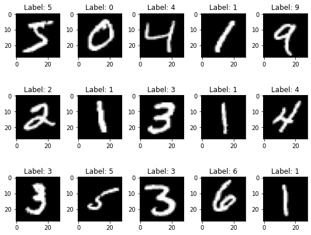
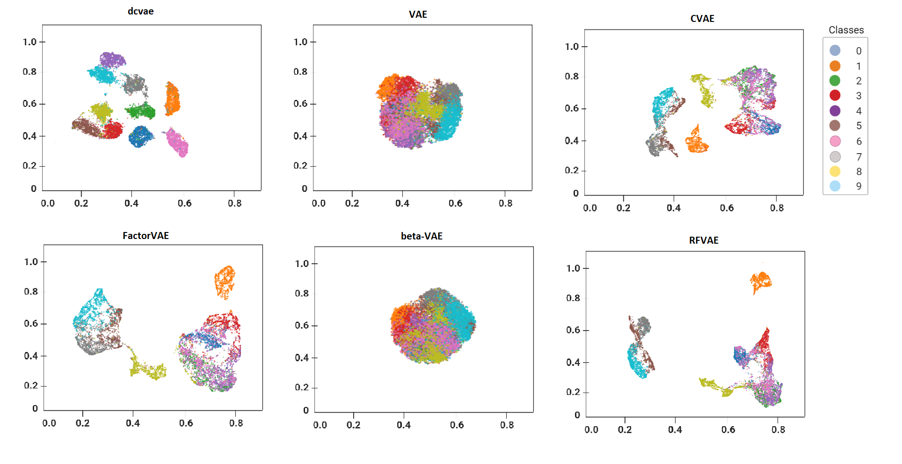
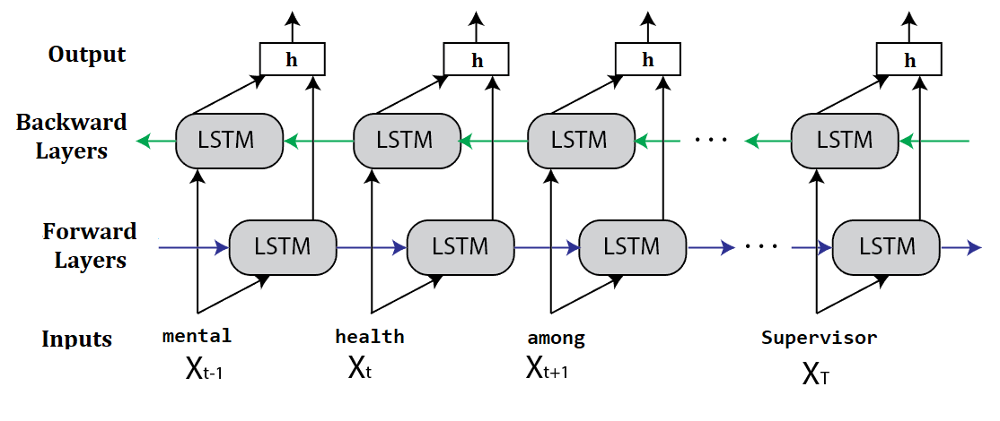
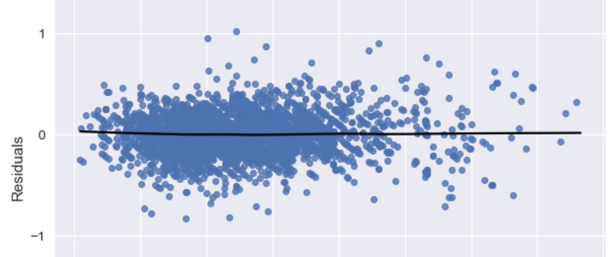

|
Asif Ahmed Neloy I'm a Teaching Professor at the Department of Computing Studies and Information Systems, Douglas College, New Westminster, British Columbia. I also hold an Adjunct Faculty Position at the School of Computing and Academic Studies, British Columbia Institute of Technology (BCIT). Currently, I am teaching courses on Advanced Databases, System Analysis and Design, Data Analytics, and Fundamentals of Machine Learning. Aside from my teaching, I am actively pursuing theoretical and applied research related to Probabilistic and Bayesian Modeling, Anomaly Detection, Dimension Reduction, and interdisciplinary applications of Auto-Encoders. Previously, I taught undergraduate and graduate courses at Vancouver Island University, University of Manitoba and North South University. I obtained my Msc in Computer Science Degree from University of Manitoba, supervised by Dr. Maxime Turgeon and Dr. Cüneyt Akçora where I focused on Dimension Reduction and Anomaly Detection using Unsupervised Machine Learning. Along with Unsupervised settings, I researched on various Data Analytics methods including Feature Extraction, Two-staged Modeling approach, Statistical Modeling under Dimension Reduction Lab and NSERC CREATE fund on The Visual and Automated Disease Analytics (VADA) graduate training program. Prior to that, I worked with Dr. Shahnewaz Siddique and Zunayeed Bin Zahir on interdisciplinary research topics including Robotics, Recommender Systems, Health Informatics and Computer Vision. Email / CV / Bio / Google Scholar / Github |

|
Recent News
|
ResearchMy research interests lie in the intersection of Supervised and Unsupervised Machine Learning, with a specific focus on Probabilistic and Bayesian Modeling, Anomaly Detection, and Dimension Reduction. I am currently exploring the intricacies of Auto-Encoders and their applications in Variational and Gaussian modeling. My work delves into the statistical interpretation and visualization of Unsupervised Machine Learning algorithms, emphasizing dimension reduction and anomaly detection. Additionally, I contribute to the field of Data Engineering by developing interactive Python packages for tasks such as Data Cleaning, Visualization, Model Interpretation, Data Scaler Selection, and Statistical Analysis. Explore some of my Python packages on PyPI. Also, representative papers are highlighted. |
See my Google Scholar profile for the most recent publications.
|

|
A comprehensive study of auto-encoders for anomaly detection: Efficiency and trade-offs
Asif Ahmed Neloy*, Maxime Turgeon, Machine Learning with Applications, 2024 project page / DOI Link This paper explores the efficiency and trade-offs among various Auto-Encoder architectures for anomaly detection. It categorizes 11 Auto-Encoder architectures and ranks them based on F1-score and ROC analysis. The study addresses reproducibility challenges and parameter tuning, offering comprehensive insights into the applications of Auto-Encoders in unsupervised anomaly detection using FMNIST and MNIST datasets. |
|

|
Disentangled Conditional Variational Autoencoder for Unsupervised Anomaly Detection
Asif Ahmed Neloy*, Maxime Turgeon, UManitoba UMSpace, 2022 project page / UMSpace A novel architecture of generative autoencoder by combining the frameworks of β-VAE, conditional variational autoencoder (CVAE), and the principle of total correlation (TC). This architecture improves the disentanglement of latent features and optimizes TC loss more efficiently, enhancing the detection of anomalies in high-dimensional instances, such as imaging datasets. |
|

|
Feature Extraction and Prediction of Combined Text and Survey Data using Two-Staged Modeling
Asif Ahmed Neloy*, Maxime Turgeon, ICDM, 2022 project page / IEEE This work presents a combination of a classical statistical model using a stacked ensemble classifier and a deep learning (DL) framework incorporating CNN and Bi-RNN, with a focus on efficiently modeling complex combined text and survey data. |
|

|
Ensemble learning based rental apartment price prediction model by categorical features factoring
Asif Ahmed Neloy*, HM Sadman Haque, Md Mahmud Ul Islam, ICMLC, 2021 ACM ICMLC This paper focuses on analyzing various features of rental apartments to predict their rental prices using ensemble learning models. It utilizes categorical features and deep learning approaches to enhance prediction accuracy. |
Teaching
|
Guest Lectures and Seminar Presentations
|
Python Packages
|
|
Template credit-Jon Barron! |
© 2024 Asif. All rights reserved.